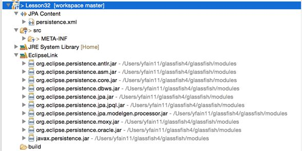
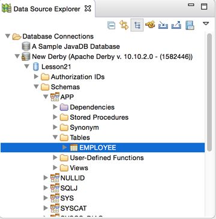
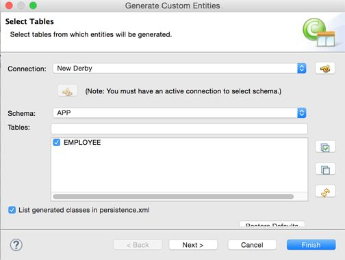

In the previous lesson you learned about various
types of Enterprise Java Beans in which you could program the business logic of your application. Now it’s
time to talk about persisting data. If an online store allows users to place orders with session beans,
there should be a mechanism for saving the data, too. Typically, the data is persisted in the relational or
NoSQL DBMS.
The Java Persistence API (JPA) defines a standard way of
mapping the Java classes to their relational database peers. This process is also known as object-relational mapping (ORM). JPA allows you to work with DBMSes
using Java objects rather than with SQL. All SQL queries are generated under the hood by the library that
implements JPA. The most popular implementation of JPA is Hibernate, and
there is a reference implementation called EclipseLink. You use
EclipseLink in the “Try It” section of this lesson.
This lesson is a brief introduction to the standard JPA 2.1 that’s implemented by Java EE 7-compliant
servers. You’ll also get familiar with the data validation process offered by the Bean Validation
framework.
The Big Picture
In the past, J2EE (currently Java EE) specifications recommended using Entity EJB to provide all interactions
with databases. Entity beans have been pruned from the current Java EE specification, and you should use JPA
instead to deal with your application’s data querying and persistence. As a matter of fact, you can use JPA
from Java SE applications, too.
JPA enables you to specify and run queries and update data without needing to write SQL statements as you did
in Chapter 21 while studying JDBC. Starting
from JPA 2.1 you can invoke stored procedures located in relational DBMSes.
JPA enables you to map Java classes to database tables using metadata, and perform create, retrieve, update,
and delete (CRUD) operations using Java Persistence Query
Language (JPQL), the Persistence Criteria API, and native database queries in SQL language. The
idea is to create an application-specific domain model as a set of interrelated Java classes and map it to
the corresponding data storage (the DBMS).
If a Java class marked with the
@Entity annotation has no argument constructor you can call it an entity:
@Entity
public class Employee{
...
}
If a persistent storage is a relational DBMS, each entity instance corresponds to a row in a database
table. If you start with an empty database, JPA tools enable you to create database tables based on Java
entities. You can also map Java entities to the existing database tables. Just like database tables, Java
entities can have one-to-one relationships (such as an Employee entity with one corresponding
OfficeAddress entity); one-to-many relationships (such as one Customer with many
Orders); many-to-one relationships (the opposite of one-to-many relationships); and
many-to-many relationships (for example, a UniversityClass has many enrolled
Students, but each Student can enroll into multiple classes).
Every entity class must define a field containing a unique value, which is the equivalent of a primary key in
a database table. You can either work directly with the fields of an entity class or use setters and getters
as defined in the JavaBeans
specification. In the latter case, persistent fields must not be public and should be
accessed by public methods, and the entity class must have a no-argument constructor.
The EntityManager class deals with objects.
Before persisting data you can validate the values using the Bean Validation API illustrated later in this lesson.
While JPQL provides string-based SQL-like syntax for working with entities, the Criteria API enables you to
dynamically construct queries from strongly typed objects.
Mapping Objects to Database Tables
You can map Java classes to database tables via
annotations, XML configuration files, or both. For example, common fields can be mapped with annotations,
and DBMS-specific mapping can be done in XML files. It does not have to be one-to-one mapping; one Java
entity can be mapped to a set of columns from more than one database table.
Besides having fields mapped to table columns, Java entities can have embeddable classes, like
Address in the Employee entity.
Typically a database table has a primary
key—one or more columns that uniquely identify each row. Accordingly, Java entities must have one or
more fields making each instance unique. For a one-field key, an entity ID is marked with the
@Idannotation. A composite key is declared in
separate classes, and the entity class is denoted with @IdClass (or @EmbeddedId if
the key defined in embeddable class). You can request your JPA provider to auto-generate the ID by adding
the annotation @GeneratedValue to the entity class. Listing
32-1 shows an example of an Employee entity.
If you don’t specify an annotation containing the database table name in the entity class, JPA assumes that
there is a corresponding database table with the same name as the entity class, which in our example is
Employee. The specified strategy GenerationType.IDENTITY means that DBMS has an
auto-generated primary key with auto-increment. Many database management systems support either identity
columns or sequence objects with similar functionality.
The fields that must have values are marked as @NotNull. If an instance
of the preceding Employee entity won’t have values in the firstName or lastName
fields, Bean Validation can catch this and generate an error. The entity fields that don’t have to be
persisted should be marked with the @Transient annotation.
If a table column name is not the same as the name of the entity field, you can
specify the column name using @Column. According to the code sample Listing 32-1, the database column name boss_name
corresponds to the field managerName of the entity Employee.
Not every Java class that corresponds to some data in the database has to be an entity. You can
have embeddable classes that define a group of arbitrary properties that belong to an entity. Let’s say a
company gives to each employee a smartphone identified by a phone number and model number. You can create a
Java class to represent such a device and mark it with
@Embeddable:
@Embeddable
public class SmartPhone implements Serializable{
@Size(max=10)
public String phoneNumber;
public String model;
}
Now the Employee entity can embed the property of the SmartPhone type along with
other fields:
@Entity
public class Employee{
@Id
@GeneratedValue(strategy=GenerationType.IDENTITY)
@NotNull
public String firstName;
// some other fields go here
// ...
@Embedded
public SmartPhone companyPhone;
}
The code in Listing 32-1 illustrates the mapping of one-to-many
relations between the entities Employee and Address (not shown). One employee can
have multiple addresses, so Employee references a collection of the Address
entities.
You can also use @Embeddable class to declare a composite primary key for an entity class.
Querying Entities
JPA offers two ways of querying entities: Java Persistence Query Language (JPQL) and the Criteria API.
JPQL
JPQL is a SQL-like query language. But SQL operates with the DBMS objects like schemas, tables,
and stored procedures, and JPQL manipulates with Java objects and their attributes from the domain
model. The application doesn’t need to know details of the underlying data storage objects to perform
JPQL queries.
If you know the queries in advance you can
precompile them; otherwise you can build them dynamically during the run time. Similarly, in JDBC you
can use either PreparedStatement or Statement.
JPQL includes (case-insensitive) keywords that are pretty easy to remember: SELECT, FROM, WHERE, ORDER
BY, GROUP BY, and so on. Here’s how you would write a JPQL query to find all
managers who have subordinates with the last name Smith:
SELECT e.managerName,
FROM Employee AS e
WHERE e.lastName='Smith'
Don’t be misled by the SELECT, FROM, and WHERE clauses; it’s not
SQL, and this queries the Java Entity class, which in turn will generate SQL under the hood. The
e serves as an alias name here to refer to the Employee entity name. The
result of this query can be a collection of Java objects that contains zero or more instances.
The next query finds all employees who were given iPhones by the firm. Note the dot notation to find the
phone model from the embedded class:
SELECT e.firstName, e.lastName
FROM Employee AS e
WHERE e.companyPhone.model='iPhone'
To populate all fields of certain entities (the equivalent of Select * in SQL) just specify
the alias name of the entity right after the SELECT clause:
SELECT e FROM Employee AS e
The Employee and Address entities have a one-to-many relationship. If you’d
like to find all employees who live in New York, this is the join written in JPQL:
SELECT DISTINCT e
FROM Employee AS e JOIN e.addresses as a
WHERE a.city='New York'
Criteria API
Although JPQL is a string-based
query language, the Criteria API allows the creation of strongly typed object-based queries. On one hand
it’s more verbose than JPQL, but on the other there is no need to do data-type conversion when
processing query results. Because Criteria API is strongly typed, Java compiler catches all the
type-related errors during the compilation time, whereas string-based JPQL needs to be parsed during the
run time.
These are some core interfaces in the Criteria API:
CriteriaBuilder: A utility class that
can create criteria queries.
CriteriaQuery: This is an object that
contains all parts of the query, such as SELECT, FROM,
and WHERE. It’s like a memory graph, in which each node represents some clause of the
query.
Root: Represents the root of the query.
TypedQuery: A query
prepared for execution.
Join: An object that represents a JOIN clause.
The next code fragment shows an equivalent of the JPQL query SELECT e FROM Employee AS e written
using the Criteria API:
Start with asking EntityManager to create CriteriaBuilder, which in turn
creates the instance of CriteriaQuery. Note that via generics,
the CriteriaQuery is typed based on the expected results. After that you add instances of
required objects (SELECT, FROM, WHERE, and so on) to CriteriaQuery.
Finally, the EntityManager prepares the executable TypedQuery that produces
strongly typed results by executing getResultList(). If you expect just one record back,
use the getSingleResult() method. You can chain several clauses in the query:
crQuery.select(employee).where(...).orderBy(...);
Because we are building the object graph, the order of the query classes in the preceding line is not
important. The Root object can serve as a starting point for joining entities:
Entities are managed by the entity manager javax.persistense.EntityManager,
which is the centerpiece of persistence mechanism; it executes all your JPA requests to read from or write
into a database. Often each instance of EntityManager is associated with a set of entities.
Such a set is called a persistence context.
A JTA transaction usually involves invocation of
more than one application component and is annotated with @PersistenceContext. In Java EE
containers the EntityManager can be injected as a resource—for example:
@PersistenceContext
EntityManager em;
With a container-managed entity manager, its persistence context is automatically propagated by the container
to application components. If you want your application to manage multiple instances of
EntityManager , you need to instantiate it programmatically using
EntityManagerFactory:
private EntityManagerFactory factory;
private static final String PERSISTENCE_CONTEXT_NAME = "employees";
...
factory = Persistence.createEntityManagerFactory(
PERSISTENCE_CONTEXT_NAME);
EntityManager em = factory.createEntityManager();
The entity manager can create, update, remove, and find entities by IDs or using a query. The code to find an
Employee entity with the ID 1234 can look like this:
To create a new row in the Employee database table, create an instance of the entity Employee
and invoke the method persist() on the EntityManager.
To delete a row, call remove(). Your application can explicitly begin and commit transactions
when the persistence is successfully completed:
@PersistenceContext
EntityManagerFactory factory;
EntityManager em;
@Resource
UserTransaction userTransaction;
...
em=factory.createEntityManager();
Employee newEmployee = new Employee();
newEmployee.firstName="Mary";
newEmployee.lastName="Thompson";
...
try{
userTransaction.begin();
em.persist(newEmployee);
em.remove(oldEmployee);
userTransaction.commit();
}
catch (SystemException e){ //other exceptions can be thrown here
e.printStackTrace();
try{
userTransaction.rollback();
} catch(SystemException e1){e1.printStackTrace()}
}
To select the manager name of the employee with
the firstName Mary and the lastName Thompson, ask the EntityManager
to run the following JPQL query:
EntityManager em;
List employees;
...employees = em.createQuery(
"SELECT e.managerName FROM Employee AS e WHERE e.firstName='Mary' "
+ " AND e.lastName='Thompson'").getResultList();
This static query works only for employees whose full names are Mary Thompson. Note that the method getResultList()
is invoked on the created query object. If you expect just one entity as a result, call the method getSingleResult()
instead. To specify the first and last names dynamically, you should use parameters; for example:
EntityManager em;
List<Employee> employees;
// parameters
String firstName = "Mary";
String lastName = "Thompson";
...
employees = em.createQuery(
"SELECT e.managerName FROM Employee AS e WHERE " +
"e.firstName= :fname AND lastName= :lname")
.setParameter("lname", lastName)
.setParameter("fname", firstName)
.getResultList();
One instance of EntityManager manages a persistence unit—a set of classes specified in
the configuration file persistence.xml, which is located in the META-INF directory
of the deployed EJB jar. If you package the application in the .war file, this file has to be
located either in the directory WEB-INF/classes/META-INF or in a jar under
WEB-INF/lib.
The file persistence.xml specifies the name of the .jar file that contains managed
persistence classes and their names. It also contains the name of the JDBC data source (not the specific
JDBC driver) used for communication with DBMS; for example:
The <persistence-unit> element must specify a name that is
unique to the persistence unit scope. All classes included in a persistence unit have to work with a single
data store defined in the element <jta-data-source>,
which must be preconfigured as a JNDI resource in your Java EE application server.
Bean Validation
When the user enters the data, she can
make a mistake. The input validation can and should be done on the client’s side to prevent unnecessary
server requests if the entered data is wrong or incomplete.
Then the data travels to the server, which also has to perform the validation before handling or persisting
the data. Think of a web application where the user enters the data in the form, the client-side validation
passed, and an HTTP request is made to the server. You should revalidate the data on the server side to
protect against the malicious user who might have hijacked and modified the data en route.
Then you need to perform the data validation prior to persisting the data. The Bean Validation framework is
supported by all Java EE-compliant servers. It’s a Java API for ensuring that the values in entities are
correct. You can declare the constraints on your entities, and the validation is automatically initiated
when you are about to create, update, or remove an entity. Standard bean validation is done by placing built-in
annotations on a class, field, or a method of a managed bean. Custom bean validation is done by
declaring a custom annotation and implementing the isValid() method of the ConstraintValidator
interface.
The code sample Listing 32-1 declared the field validation
using @NotNull and @Size built-in constraints defined in the package javax.validation.constraints,
but you can create and implement custom validation rules as well. You can validate non-static methods of the
entity class.
The entity life-cycle callback methods marked with the annotations @PrePersist and @PreRemove
are invoked on the entity before the EntityManager persists or removes this entity.
Accordingly, another pair of annotations, @PostPersist and @PostRemove, are
invoked after these operations.
For example, you can put the validation code in the method transferEmployee() to ensure that the
transfer has been approved by the employee’s manager. Throwing an exception invalidates the operation:
@PrePersist
public void validateTransfer(){
if (!transferApproved()){
throw new TransferException("Manager didn't approve transfer");
}
}
To prevent NullPointerExceptions, you can add a @NotNull constraint to the return
value of a method:
@NotNull
public Employee getEmployee() {
...
}
If you need to validate a group of fields, you can create a cross-parameter validation on the constructor or
a method level. For example, you can create a custom constraint @EmploymentDates that ensures
that the employee’s hire date is older than the
resignation date, and none of these dates are Saturday, Sunday, or a company holiday. Such a custom
validation can be applied to the class Employee:
@ValidateEmploymentDates (start="hireDate", end="resignationDate")
public class Employee{
Date hireDate;
Date resignationDate;
...
}
To create a custom validation, you need to declare a custom annotation and implement it. For example, you
could declare the custom annotation as follows:
@Target( { TYPE, ANNOTATION_TYPE })
@Retention(RUNTIME)
@Constraint(validatedBy = {EmploymentDatesValidator.class} )
@Documented public
@interface ValidateEmploymentDates {
String message() default "{end} should be later than {start}
and can't fall on weekends and holidays";
String start();
String end();
Class[] groups() default {};
Class[] payload() default {};
}
This annotation allows two parameters: start and end. According to the Bean
Validation specification, it must include three mandatory attributes: message,
groups, and payload. The message attribute is needed to specify an
error message if the constraint is violated. An attribute groups can be used to group
constraints, and must default to an empty array. The payload attribute can be used to assign
custom payloads required for validation. It also must default to an empty array.
The class that implements this validation has to implement the interface javax.validation.ConstraintValidator,
that declares two methods: initialize() and isValid(). The first method initializes the values to be
validated, and the second implements the validation logic:
public class EmploymentDatesValidator implements
ConstraintValidator(ValidateEmploymentDates, Employee){
private String start;
private String end;
public void initialize(ValidateEmploymentDates validateEmpDates){
start = validateEmpDates.start();
end = validateEmpDates.end();
}
public boolean isValid(Employee employee,
ConstraintValidatorContext constraintValidatorContext) {
// Implement the validation logic here.
// Return true if valid, and false if invalid
}
}
The content of this section should give you an
idea how to validate entities. For more details about the Bean Validation API, refer to the Oracle
tutorial.
This lesson gives you a very high-level overview of the Java Persistence API. You can find more detailed explanation of JPA in the online Oracle tutorial.
Try It
The GlassFish 4 server includes the binaries of the JPA 2.1
provider EclipseLink, which is an open source mapping and
persistence framework. You’ll be using EclipseLink to auto-generate the Java entity class Employee based
on the existing database table EMPLOYEE. This serves as an example of object-relational mapping,
when Java entities are generated based on the existing database. In this walkthrough you reuse the database
named Lesson21 with a table Employee that was created in Lesson 21.
Lesson Requirements
You should have installed Java, Eclipse, GlassFish, and Derby DB , which comes with GlassFish.
You can download the code and resources for this “Try It” from the book’s web page at www.wrox.com/go/javaprog24hr2e. You can find them
in Lesson32.zip.
Step-by-Step
This time you create a new type of Eclipse project. Create a new JPA project by selecting File → New
→ JPA → JPA project. Name it Lesson32. Select GlassFish 4 as a target run time and JPA
Configuration 2.1, as shown in Figure
32-1.
Figure 32-1:
A fragment of the JPA project
configuration window
A pop-up suggesting the name of the default output folder displays. Don’t change anything there; click
Next.
The JPA Facet window enables you to select the JPA implementation—the library that implements JPA
specification. The User Library box is initially empty.Press the little Preferences icon next to it
and then click New in the Preferences window to configure a new library. Call it
EclipseLink.
To include full EclipseLink implementation, add the following external jars from the folder glassfish4/glassfish/modules to
your EclipseLink user library:
Click the Finish button and the generation of the Eclipse JPA project will be finished. The structure
of your project should look similar to Figure
32-2.

Figure 32-2:
Newly generated Eclipse JPA
project with EclipseLink support
Start your Derby database server using the startNetworkServer command, as explained in
Using the ij utility in a separate command window, check to see that the database Lesson21
exists and the table Employee (created in Lesson 21) is still
there. If not, re-create it and populate it with data.
Add the file derby/lib/derbyclient.jar to the build path of your Eclipse project
(right-click the project Lesson32, select Properties → Java Build Path → Libraries → Add External Jars).
This is where the Derby DB implements the JDBC driver.
In the project’s Data Source Explorer view, right-click Database Connections (see Figure 32-3) and create a new
Connection Profile.
In the pop-up window, configure your new connection into the database Lesson21 that you created in Chapter 21Chapter 21. The default user id is
user and the password is sys. (See Figure
32-4.)
Click Test Connection to ensure the connection is successful.
Using the view Data Source Explorer, connect to the database using the newly configured profile and
see that the table Employee exists in the APP schema, as shown in Figure 32-5.

Figure 32-5:
Verifying that the table
Employee exists
You can see the data in Eclipse, as shown in Figure 32-6;
right-click the table Employee and select Data → Sample Contents.
JPA requires database tables to have primary keys, but our table Employee didn’t define one. You need
to fix this by making the column empno a primary key. You can do it from the command
line via the ij utility (see working_with_databases_using_jdbc)
by issuing the following command:
alter table APP.Employee add primary key (empno);
Right-click the name of project Lesson32
and select JPA Tools → Generate Entities from Tables. In the pop-up window, select the connection, the
schema APP, and the table Employee and click Finish as shown in Figure
32-7.

Figure 32-7:
Generating an entity from the existing table
Open the folder src in your Eclipse project, where you’ll find a freshly generated class
called Employee that looks as follows:
package model;
import java.io.Serializable;import javax.persistence.*;
/** * The persistent class for the EMPLOYEE database table. * */
@Entity
@NamedQuery(name="Employee.findAll",
query="SELECT e FROM Employee e")
public class Employee implements Serializable {
private static final long serialVersionUID = 1L;
@Id private int empno;
private String ename;
@Column(name="JOB_TITLE") private String jobTitle;
public Employee() { }
public int getEmpno() { return this.empno; }
public void setEmpno(int empno) { this.empno = empno; }
public String getEname() { return this.ename; }
public void setEname(String ename) { this.ename = ename; }
public String getJobTitle() { return this.jobTitle; }
public void setJobTitle(String jobTitle) {
this.jobTitle = jobTitle; }
}
Finally, open the folder META-INF, where you’ll find the file
persistence.xml:
Eclipse has generated the Java entity class
Employee from an existing database table. This completes your assignment.
The reverse workflow is also supported. Eclipse can generate a database table based on the entity class
definition. To do this, you’d need to use the option JPA Tools → Generate Tables from Entities.